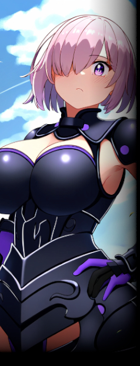

▼抑制機構【 キャメロット 】
同名のレジスタンスを前身とする、下層の政府機関。イメージワードは【暴力】。
さらに元を正せばジョー・ブロッグズが立ち上げたマフィアが母体である。
元々、下層を支配しているに等しい組織であったが、ラグナロク事件を契機として正式に下層の管轄を行うようになった。
幹部はいずれも自身が一勢力の長となってもおかしくない逸材たちで、それらがジョーの実力とカリスマ性によって束ねられているため、
組織としての潜在能力や総合力そのものはグングニルすら凌ぐ。
組織の分類としてはマフィアになるものの、その活動は島内でも類を見ないほど秩序立っている。
隊員はジョー指揮の下、軍隊さながらの統率を以て行動し、その精錬な姿から一般市民からの信頼は篤い。
反面、規律違反者には苛烈で、敵対組織に対しても一切の容赦がない。
前述した市民からの評判についても、敵対者相手といえども苛烈すぎるとして恐れられている面も否定はできない。
また、幹部同士の関係は各々が優秀すぎるあまりにジョーへの解釈や在るべき下層の姿が異なり、互いに敬意こそ払えどかなり冷え込んでいる。
ジョーの存在が楔となって辛うじて分裂を回避している状態であり、その点については頭を悩ませている様子。
|
|
▼ジョー・ブロッグズ
下層を支配するアイリッシュ系ギャング【キャメロット】の首領。
本名は【アルトリア】。３５年前の下層にて私生子として生を受け、無戸籍のまま孤独で過酷な少女時代を送った。
性格は冷厳・冷静・冷徹。仲間には寛容だが、逆らう者には容赦をしない。
「気が付けば隣で笑っていた者が死んでいく。所詮ここはそういう場所だ」 |

|
 |
▼マシュ・キリエライト
【キャメロット】幹部の少女。かつての名前は【レミエム】。
異能は【いまは遙か理想の城】。
性格は慇懃無礼で、何事にも見下すような、冷めた振る舞いが目立つ。
「ハァ……。わかりましたよ、アルト……ジョーの頼みです。やってやりますとも」 |